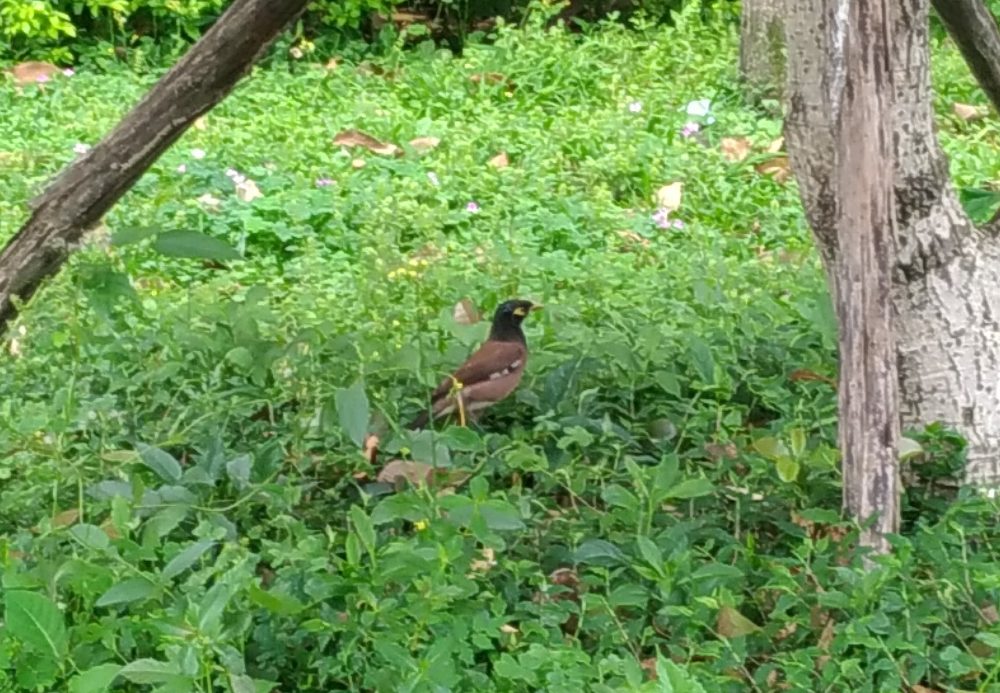
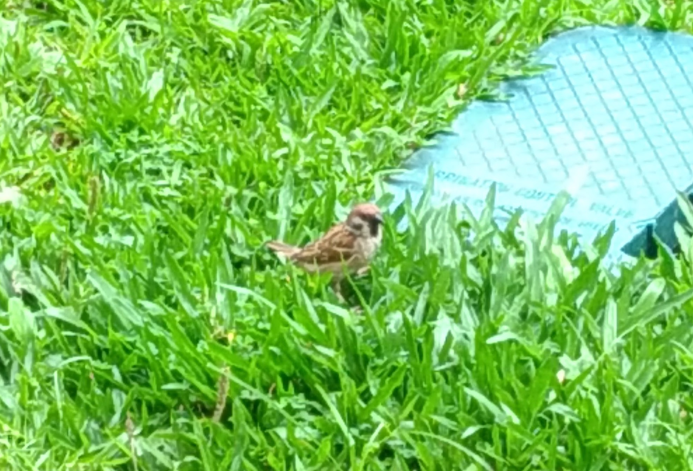
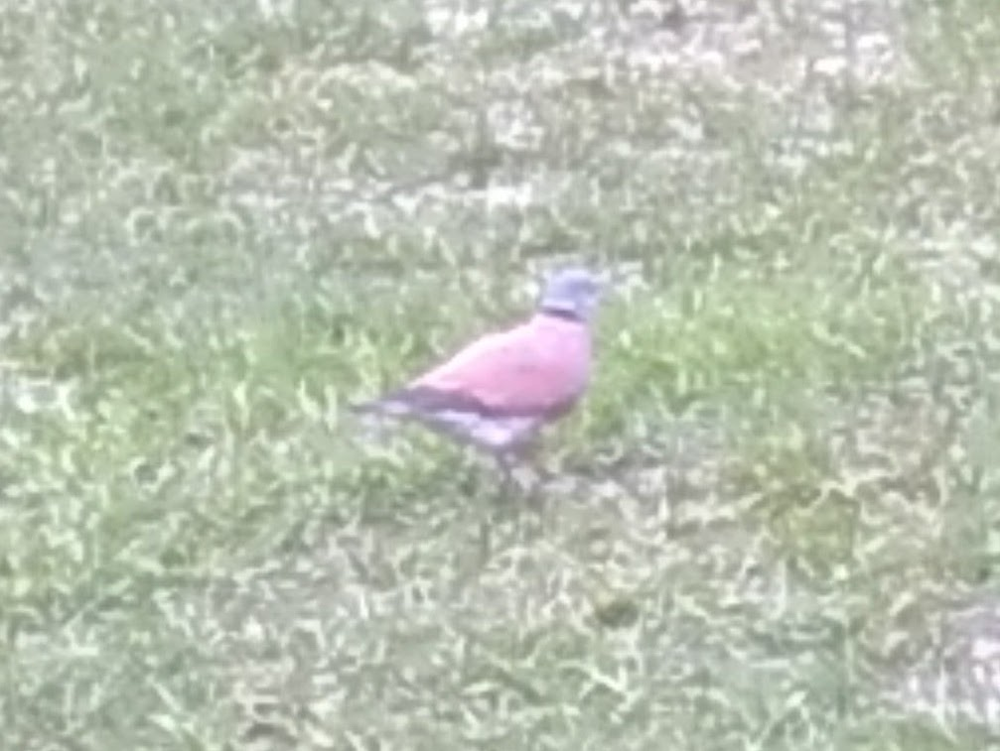
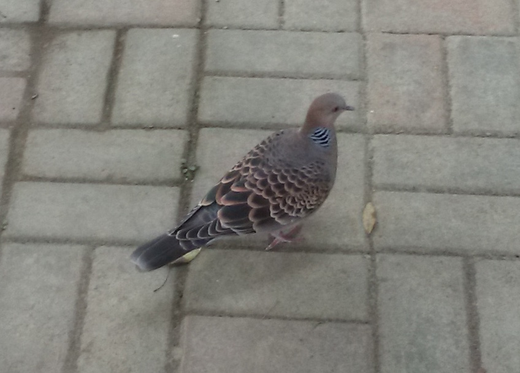
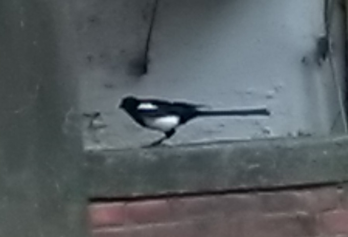
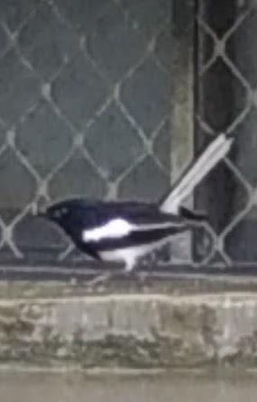
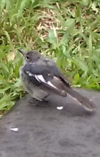
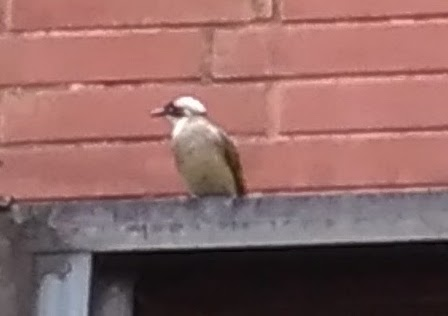
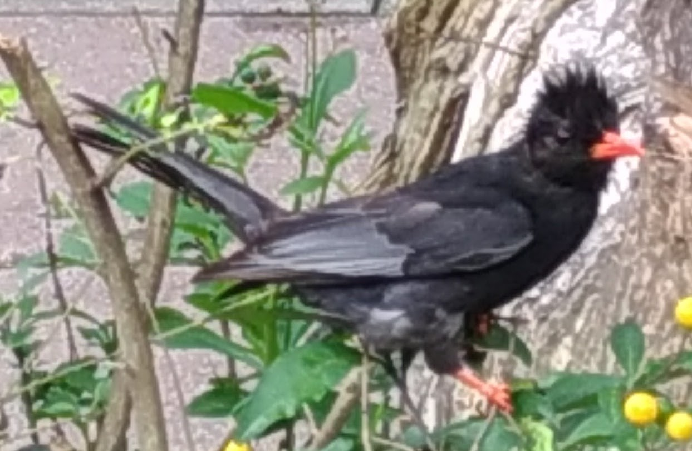
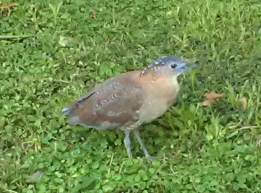

校園常見鳥類
以下物種皆是國北教大常見鳥類，照片皆為我在國北教大校園內攝影
| 種類 |
照片 |
物種簡介 |
|
|---|---|---|---|
| 家八哥 |  |
椋鳥科 八哥屬 極為適應人類環境，毫不畏懼在人類周遭活動。單獨、成對或成十餘隻的 小群活動，地棲性明顯，多數時間在地面覓食與走動，不覓食時則停棲在 樹上、電線、公路及橋樑的護欄、或建築物屋頂上休息。經常與其它同屬 的八哥混群活動。鳴聲嘹亮，略為聒噪，最常發出的鳴聲為連續4至7聲的 嘹亮單音「丟丟丟⋯⋯」。善鳴，會模仿多種聲音，被人類飼養用以模仿 說話，是台灣於1980年代起大量進口本種的主要原因。 |
|
| 麻雀 |  |
雀科 麻雀屬 麻雀是有階級制度的物種，臉及黑斑越大越黑表示階級越高麻雀是典型的 親人種，活動於人類活動較多的環境，它們的棲息所和覓食地常就在城鎮 村落中，但本物種僅見於平原，山區難見它們的身影。因為麻雀非常近人 ，僅在有人類活動的環境出現，因此有人形象地將他們稱為「會飛的老鼠」 。有時可以發現它們在個別的樹上築巢，然而麻雀在一年的四個季節中都 是成群的，具有很多洞的老樹群，通常是它們最喜愛的築巢地點。 |
|
| 紅鳩 |  |
鳩鴿科 斑鳩屬 為一種小型鳩鴿，常見於平原、草地成群覓食。分布於印度、尼泊爾、不 丹、孟加拉、緬甸、中南半島、台灣、菲律賓以及中國大陸的自華北以南 各地、西抵四川、西藏、長江以北各地等地，主要棲息於開闊田野以及村 莊附近。 此照片中的紅鳩為雄性，雌性紅鳩體色為棕色 |
|
| 金背鳩 |  |
鳩鴿科 斑鳩屬 有時可見到一、兩隻安靜的停棲在山麓或丘陵地帶的電線上，非繁殖期不 時會看到小群停棲在開闊地帶枝葉稀疏的樹上，偶爾會見到單獨一隻在市 區的公園或安全島上活動。飛行呈直線前進，鼓翼沉重。會發出低沉「咕 、咕-嗚、咕、咕」的叫聲。為一夫一妻制，築巢於大樹上，巢材為小樹枝 及枯葉。 |
|
| 喜鵲 |  |
鴉科 喜鵲屬 喜鵲是適應能力比較強的鳥類，在山區、平原都有棲息，無論是荒野、農 田、郊區、城市都能看到牠們的身影。但是一個普遍規律是人類活動越多 的地方，喜鵲種群的數量往往也就越多，而在人跡罕至的密林中則難見本 物種的身影。喜鵲常結成大群成對活動，白天在曠野農田覓食，夜間在高 大喬木的頂端棲息。 |
|
| 鵲鴝 |  |
鶇科 鵲鴝屬 鵲鴝與喜鵲相似，但體形較為細小。鵲鴝性格活潑好動，覓食時常擺尾， 不分四季晨昏，在高興時會在樹枝或大廈外牆鳴唱。鵲鴝歌聲十分好聽。 左圖為鵲鴝成鳥，右圖為鵲鴝幼鳥 |
|
| 白頭翁 |  | 鵯科 鵯屬 常成群出現在平原區灌木叢，丘陵樹林地帶，以及校園，公園，庭院，行 道中的各種高高的電線與樹上。春末夏初開始營巢繁殖，白頭翁在進入繁 殖期後會聚集在樹林上喧叫，常常引起人們的注意。這種群聚的現象，到 夏末秋季冬季時就消失了。 繁殖期時，一大群白頭翁同時在國北學餐前的榕樹上鳴叫，非常惱人！ |
|
| 紅嘴黑鵯 |  | 鵯科 短腳鵯屬 為群聚性鳥類，尤其秋冬時可見壯觀的大群體，繁殖期４月到６月採一夫 一妻制，巢為碗狀，每次繁殖約下２至３顆蛋。以花蜜、葉芽、果實及昆 蟲為食。個性好動，往往一隻飛離就能帶動群體齊飛。 雖說紅嘴黑鵯是群聚性鳥類，但我在國北都是看到單隻，沒看到群體 |
|
| 黑冠麻鷺 |  | 鷺科 麻鷺屬 黑冠麻鷺主要分布於馬來西亞和中南半島一帶，在臺灣則在中南部有固定 的族群。二三十年前，黑冠麻鷺在台灣的族群量稀少，在賞鳥圖鑑上屬於 「稀有留鳥」等級，加上多半在淺山森林底層活動的隱密習性，非常不容 易觀察。但不知為何，十幾年來，黑冠麻鷺的族群逐漸往北部擴展，而且 似乎開始適應了都會環境，因此在各大校園、植物園、公園等都市綠地裡 也越來越常見。黑冠麻鷺以蚯蚓、昆蟲為食。 |
以下鳥類也是校園內的常客，由於來不及拿出相機故無照片
| 種類 |
物種簡介 |
相遇慨況 |
|
|---|---|---|---|
| 五色鳥 | 鬚鴷科 鬚鴷屬 身長約20到23公分，喙基上黑色嘴鬚發達，身體多為翠綠色，頭部大部份為藍色， 額頭和喉部有黃色分布，眼先和前頸有小部份紅色，眼部至耳羽上方則為黑色，粗 厚嘴部為黑色，腳鉛灰色。叫聲單調而響亮，類似敲木魚「叩叩叩……」，又因其 羽色多彩繽紛，而被稱作「花和尚」。在繁殖時會啄樹洞為巢。 |
學校大禮堂旁的茄苳結果了，吸引了大量的鳥 類來覓食，我在茄苳樹下抬頭一看，竟看到樹 上有隻五色鳥，我急忙低頭從包裡拿出手機想 要拍攝，但當我再次抬頭時，牠已不見蹤影。 |
|
| 綠繡眼 |
繡眼鳥科 繡眼鳥屬 體長約11厘米；背部羽毛為綠色，胸和腰部為灰色，腹部白色；翅膀和尾部羽毛泛 綠光；最明顯的特徵就是眼的周圍環繞著白色絨狀短羽，形成鮮明的白眼圈，故名 繡眼。在庭園及都市的行道樹上最易看到的珍巧可愛鳥兒，橄欖綠的羽色出現在聖 誕紅或山櫻花樹上時更顯突出。綠繡眼鳴聲清脆悅耳，清晨時常在居家窗口向人問 早，讓人有股一日之計在於晨的溫馨感受。牠們亦是古代詩人及畫家最喜描述的鳥 類之一。 |
早八上體育課，正當我要走到集合地時，覺得 旁邊的樹叢有些吵鬧，靠近一看發現有隻綠繡 眼在樹叢裡跳上跳下，不一會兒就不見了，來 不及拿出手機拍照。 |
|
| 綠鳩 |
鳩鴿科 綠鳩屬 牠是台灣較大型鳩鴿科中的一屬，族群數量不多，目前受到法律保護。綠鳩喜歡在 中海拔山林棲息，在秋冬寒涼的氣溫侵襲下，牠們會垂直性的遷移而下降到低海拔 山區。綠鳩外貌看起來比其他鳩鴿肥胖；翠綠帶黃的羽色在樹林中是完美的保護色 ，在秋收季節果實纍纍的樹椏上，往往會看到牠們在一起覓食。 |
正在往篤行樓方向前進去上早九的經濟學時，在 篤行樓旁停車場的櫻花樹枝上看到一隻綠鳩，跟 牠對望了一會兒，牠竟然沒有飛走的意思(綠鳩怕 人)，但是我當時可能是因剛起床腦袋渾沌，我竟 然沒拿出手機拍照就直接走了，現在超後悔的， 我後來再也沒遇見過綠鳩了，我竟然錯過了這麼 好的一次機會，ＱＡＱ！ |
|
| 珠頸斑鳩 | 鳩鴿科 斑鳩屬 珠頸斑鳩的主食是果實、穀物和其他植物的種子，也會捕食昆蟲。主要在地面上覓 食。有水時也會喝水，他們喝水的方式是俯身吸水，與其他鳥類不同。如果地點許 可，它們也會用水清洗身體。它們是典型的陸生鳥類，一般在草地和農田中覓食。 全年都會繁殖，常能在樹木、建築物的邊沿甚至是地面上發現它們的巢穴。 |
其實我也不確定我到底有沒有見過珠頸斑鳩，因 為珠頸斑鳩和紅鳩長得十分相近，我其實無法很 快的分辨出我看到的到底是哪種，本來以為我遇 到並拍下的是珠頸斑鳩，結果我在整理照片的時 候才發現原來我拍到的原來是紅鳩。而鳩科鳥類 很常見，所以我也不會很常紀錄牠們的身影，故 珠頸斑鳩照片從缺。 |